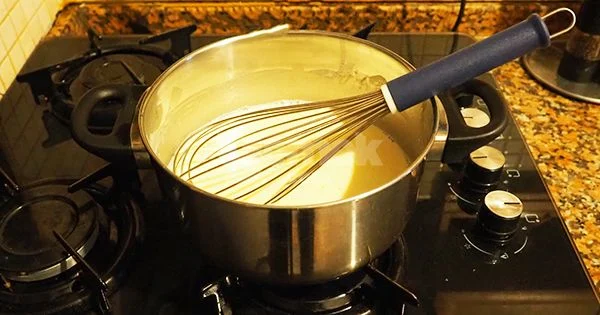
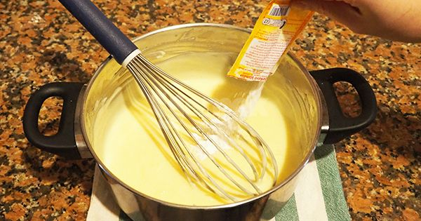
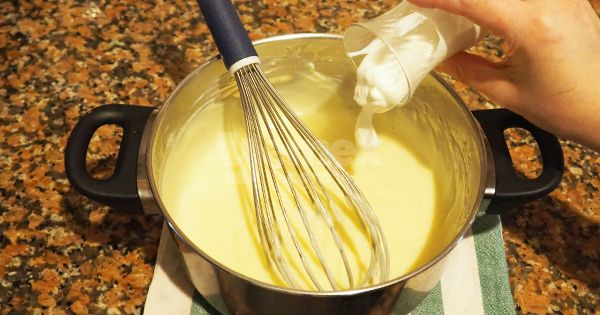
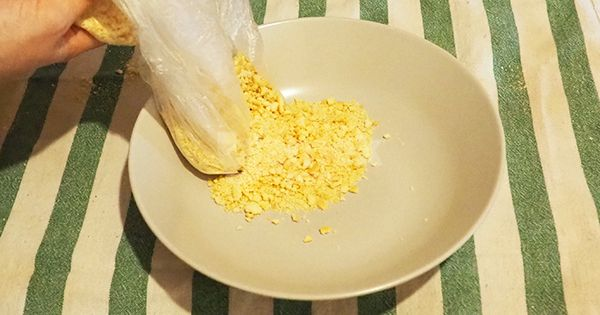
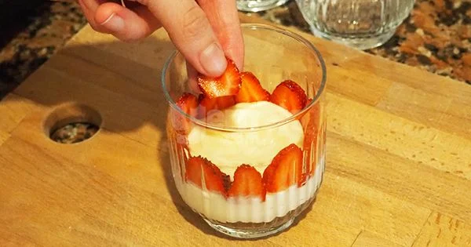

İçinde yumuşacık bir puding var. Ama bildiğimiz pudinglerden çok daha lezzetli, kıvamı çok daha farklı. İşin sırrı pudingi pişirdikten sonra içine krema ilave etmekte saklı. Bu şekilde çok daha hafif bir tadı oluyor. Yetmiyor, içine o yemelere doyamadığımız tadıyla bebe bisküvileri de giriyor. Mevsimindeyse mis kokulu çilekler de işin içerisine dahil oluyor.
Tarif :Ayşegül Uslu
Bir tencerenin içerisine süt, şeker, nişasta, un ve yumurta sarısını aktarın. Güzelce karıştırın.
Orta ateşte, sürekli karıştırarak muhallebi kıvamına gelene dek pişirin.
Ocaktan alıp vanilyayı ekleyin ve karıştırın.
Ilımaya başlayan kremayı ilave ederek karıştırmaya devam edin.
Bu sırada bisküvileri rondodan geçirin. Çileklerin saplarını çıkararak dilediğiniz boyutlarda kesin.
Soğuyan pudinginizden birkaç kaşık alın. Bir kupun tabanına yayın. Üzerine bisküvi ve çileklerden ilave ederek katlar çıkın. Tüm bisküvi, puding ve çilekler bitene kadar kuplara bu şekilde bölüştürün.
Ardından buzdolabında 3-4 saat kadar soğumaya bırakın. Servis aşamasında üzerini bisküvi, çilek ya da muz, çikolata sos gibi farklı malzemelerle süsleyerek servis edin.